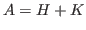
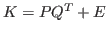
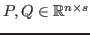
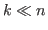
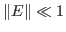
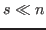
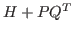

In this work we study the iterative solution of nonsingular, nonsymmetric
linear systems of  equations
equations
| (1) |

where and
for some full rank
with
, and
.
Different strategies have been proposed when the skew-symmetric part  has exactly rank
has exactly rank

. In [1] it is presented a progressive GMRES method that allows for the short-term computation of an orthogonal Krylov subspace basis. As pointed out in [5], although the method is mathematically equivalent to full GMRES [6] in practice it may suffer from instabilities due to the loss of orthogonality between the vectors of the generated Krylov subspace basis. In the same paper, the authors propose a Schur complement method that also permits the application of short-term formulas. The method obtains an approximate solution by applying the MINRES method times. The authors also suggest that can be successfully applied as a preconditioner for GMRES for the problem considered in this paper.We study a method based on the framework proposed in [4]. Assuming that the matrix

is nonsingular, our approach computes an approximate LU factorization of the matrix